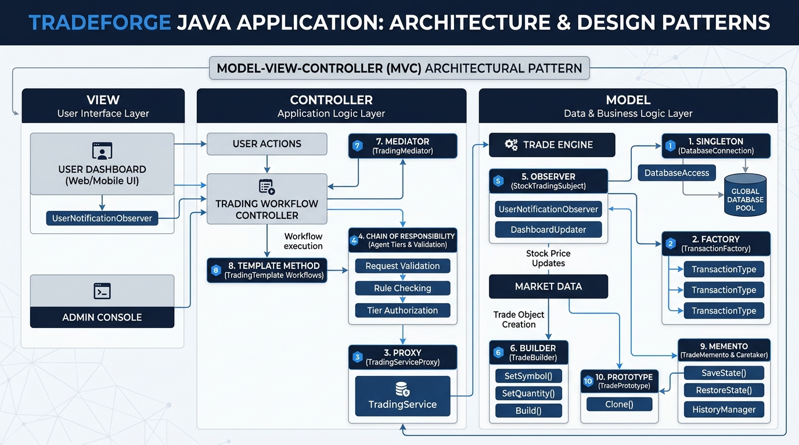

TradeForge is an academic stock trading simulation built using Java 11, Java Swing, MVC Architecture, JDBC, and MySQL. The application demonstrates exactly 10 Gang of Four (GoF) design patterns working in an integrated, authentic desktop workflow.

| # | Pattern | Type | Primary Classes | Concrete Responsibility in TradeForge |
|---|---|---|---|---|
| 1 | Singleton | Creational | DatabaseConnection |
Provides a shared, thread-safe JDBC connection manager across the application lifecycle to avoid memory leaks. |
| 2 | Factory | Creational | TransactionFactory, BuyTransaction, SellTransaction |
Instantiates BUY or SELL transaction objects to calculate 2% brokerage charges and net totals dynamically. |
| 3 | Proxy | Structural | TradingServiceProxy, RealTradingService |
Protection proxy: verifies user authentication and ownership before delegating trade execution. |
| 4 | Chain of Resp. | Behavioral | Tier1AgentHandler, Tier2AgentHandler, Tier3AgentHandler |
Routes orders to broker agents based on quantity: 1–500 (Agent 1), 501–700 (Agent 2), >700 (Agent 3). Plus a validation chain. |
| 5 | Observer | Behavioral | StockTradingSubject, UserNotificationObserver |
Broadcasts trade completion events in real time to update the dashboard's top notification banner. |
| 6 | Builder | Creational | TradeBuilder |
Fluent, step-by-step assembly of TradingRequest objects with strict field validation before execution. |
| 7 | Mediator | Behavioral | TradingMediator |
Central hub that coordinates the Controller, Proxy, Chains, Template Method, DAOs, and Observers, achieving loose coupling. |
| 8 | Template Method | Behavioral | TradingTemplate, BuyTradingWorkflow, SellTradingWorkflow |
Enforces an invariant 5-step trade sequence (validate → check → execute → save → notify) with customized hooks inside an ACID transaction. |
| 9 | Memento | Behavioral | TradeMemento, TradeCaretaker |
Captures and restores UI trade draft form values (Save Draft and Undo/Restore) without altering database state. |
| 10 | Prototype | Creational | TradePrototype, TradingRequest |
Deep-clones trade requests (Duplicate Trade) to create an independent editable draft without immediate database writes. |
DatabaseConnection, managing a single thread-safe connection to MySQL to avoid socket leaks. Credentials submitted on the login screen are processed by LoginController (MVC Controller layer) without hardcoding SQL in the GUI."
DashboardFrame) loads:
StocksPanel).PortfolioPanel).TradePanel).TransactionHistoryPanel).Tier1AgentHandler delegates down the chain to Agent 2 - Priya Patel (Tier 2).TransactionFactory). When BUY is selected, BuyTransaction adds a 2% brokerage fee to the total cost. When SELL is selected, SellTransaction deducts the 2% fee from the proceeds. The GUI contains no business math; it simply invokes the Factory product."
TradeMemento captures a snapshot of current form inputs and stores it in TradeCaretaker. When we alter the inputs and click 'Undo / Restore', the form values instantly revert to the saved snapshot. This restores the UI draft state without rolling back committed database transactions."
TradingRequest implements TradePrototype to clone values from an existing holding or transaction record. It creates an independent, editable draft without inserting an immediate duplicate record in the database."
TradeBuilder): Validates and constructs the TradingRequest.TradingMediator): Decouples the Controller from backend subsystems.TradingServiceProxy): Verifies security and ownership before forwarding to RealTradingService.TradingTemplate): Runs the fixed 5-step trade sequence inside an ACID JDBC transaction.StockTradingSubject): Notifies UserNotificationObserver upon success, updating the top banner in real time."Answer: In a trading system, if the Controller directly invoked the Proxy, Builder, Factory, DAOs, Chain handlers, and Observers, it would become an overly complex "God Object" with high coupling. The TradingMediator centralizes this coordination so the Controller only interacts with a single, high-level interface.
Answer: TradingServiceProxy implements TradingService and acts as a security barrier. It checks: (1) user is authenticated (userId > 0), (2) caller owns the request, and (3) request is not null. It rejects invalid requests with a SecurityException before any database queries execute.
Answer: Prototype creates a new, independent clone of an object with identical values for cloning or duplication. Memento captures an internal state snapshot of an existing object so it can be restored to that exact previous state later via Undo.
TradingTemplate declared final?Answer: Because the Template Method pattern requires the core algorithm skeleton (validate → check availability → execute operation → save transaction → notify observers) to remain invariant. Declaring processTrade(...) as final prevents subclasses from altering the execution order, while allowing them to customize hook steps.
Answer: Inside RealTradingService, we disable auto-commit (connection.setAutoCommit(false)). All four database mutations—user balance update, stock inventory update, portfolio holding update, and transaction record insertion—execute in a single JDBC transaction. If any error occurs, connection.rollback() is triggered, preserving ACID guarantees.
Answer:
The project is fully compiled and tested using Apache Maven and JUnit 5:
mvn compile — 51 source files compiled with 0 errors.mvn test — 9 comprehensive test cases covering all 10 patterns passed with 0 failures, 0 errors.target/tradeforge.jar.